Requirements
- Windows 10
- Memory: 8GB or more
- CPU: intel core i5 or better
- GPU: dedicated graphics card recommended, but works on integrated as well
First Steps
Blade is heavily based on Ultimaker Cura. In particular, you will get quite far by the ordinary Cura documentation: https://ultimaker.com/en/resources/51945-first-use-ultimaker-cura The following sections point out what are the differences and the explicit features of Blade in contrast to Cura.The user may do:
- Load geometries and manipulate them in preparation for printing
- Use preinstalled extensions for manipulating the model and the toolpath output
- Select setting presets for materials and printer for printing
- Change settings (basic/advanced/expert)
- Create gcode file and use it to print on a BigRep printer
- Customize Blade in a significant way, i.e.
- adjust any Blade files (files in the install directory or in the appdata directory)
- change machine settings (printer/extruder settings)
- add own printers
- add own materials
- Use experimental settings.
- Disable post processing.
- Install plugins or materials from the Ultimaker Marketplace
If you hold the cursor over a setting you get a description of the setting and its effect. Quality Presets:
- "Quality" will result in a slower print, but gives a higher overall print quality.
- "Medium" is faster than "Quality" and was known as "Speed" in previous Simplify3D Factory Files.
- Here you can chose where Blade is placing the retraction points.
- With standard settings, Blade will work to place retraction points at less visible positions. This is suitable for most geometries. However, in some rare cases you have to do manual adjustments.
- If you switch to "User Specified" you can choose a a X-Y coordinates as in Simplify3D. If you also check "Z Seam Relative" the position is relative the center of the model.
- This change the amount of infill gradually.
- This produces a lower infill in the main body and higher infill closer to the surface of the part.
- This reduces the printing time and amount of material needed.
The extruder setup in Blade should be the same as on the machine. If there is more than one physical machine, then there shall be for each physical machine a virtual representative in Blade. For example it is possible to add two ONEs with different extruder setups. These will be saved locally on the user's computer and can not be easily transferred to another computer. Extruders can be enabled and disabled by right clicking on the extruder in the main menu. This is important as there are some setting that change if one or both extruders are enabled . If two extruders are enabled, Blade assumes that the user wants to perform dual extrusion. So if only T1 (Extruder 2) is used, T0 (Extruder 1) should be disabled and the other way round.
When Blade is opened for the first time you are asked to add a printer. Additional printers can be added later
- Click on Printer Selection the top right corner and then on "Add Printer..."
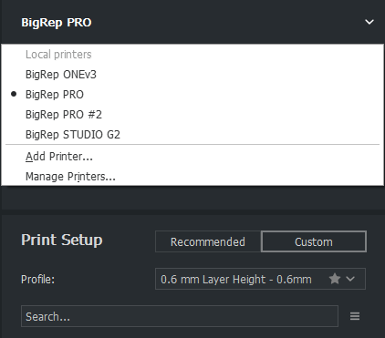
- You can also click on "Settings" in the menu bar and then on "Printer", "Add Printer..."
- In the following menu you can add a printer and also change its name:
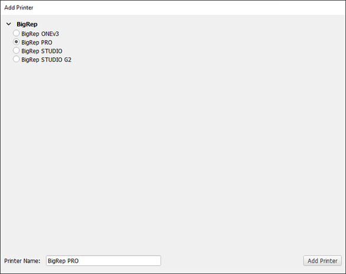
Both extruders must be enabled.
Dual extrusion with two or more models
- Each model can be mapped to one of the extruders.
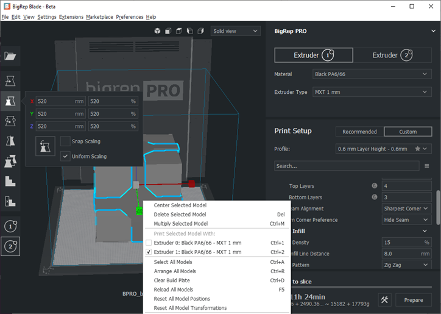
Dual extrusion with a different support extruder
- Make sure you have the right material mapped to the correct extruder.
- Also the model(s) should be connected to the extruder which is not used for support.
- Then the "Support Extruder" need to be changed to the other extruder.
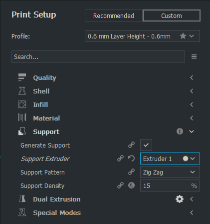
Prime Tower adjustments
- Independent of how the dual extrusion is used, the prime tower should be adjusted.
- Dependent of the height of the model, also the size of the tower needs to be adjusted to ensure it's stability and preventing it falling over.
- To avoid oozing, the tower should be placed as near as possible to the model.
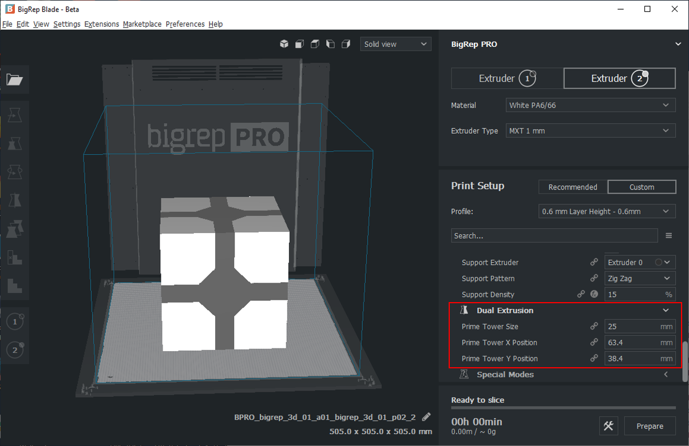
All at Once
What it does
All models will be printed at the same time. Called Layer-by-Layer in Simplify3D. This means that the printer will print one layer of each model and than move to the next layer, and so on.Why it should be used
All at Once is the default (if both extruders are enabled) and easier to use than "Mixed Mode". In particular, this configuration is safe and you can print any scenario without taking care about safety distances. How to use "All at Once" If the second extruder is enabled, "All at Once" is the only possible mode. In particular, you cannot change it. Otherwise, you can change the mode in "Special Modes/Print Sequence". Good to know:- "All at Once" is the default value if both extruders are enabled. Otherwise, "Mixed" is the default.
- It is easier to use than Mixed mode.
- A disadvantage is the following: In case of a printer failure, all prints will be lost.
- Printing results might be different for each model because the relative motions are different.
- Printing time might be higher because of more travel moves.
Mixed/Batch Printing
What it does
Mixed printing mode replaces the standard Cura "One at a Time". Together with "Mixed" we offer the batch printing plugin (Menu→Extensions→Batch Printing) to get the full out if this mode. To use the full potential of the print bed and still uses the advantage to print model by model the mixed mode combines layer by layer printing with model by model. But instead of printing each model separate it uses row and columns to make the print safer. Depending on the used printer the behavior is slightly different. The ONE and PRO starts at the front of the printer, while the STUDIO and STUDIO G2 start from the right.Why it should be used
Mixed mode is more complex to use than "All at Once". The benefit is that the models will be printed as they would be printed alone. Whenever a model is finished it can't be effected by a printer failure.How to use Mixed mode
"Mixed" will be automatically enabled when you disable the second extruder. You can alter the mode via "Print Sequence/Special Modes". As already mentioned, the Mixed mode will do most of the work and chose the right mode depending on how the models are placed on the print bed. Placing can then be done via the batch printing extension automatically.Print different models in one print:
- Import all models
- If needed, alter settings for specific models by "Per Model Settings"
- If several models form a single part, group them together
- Call "Menu→Extensions→Arrange objects for mixed mode"
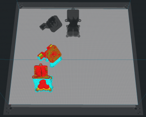
Print a single model multiple times in one print:
- Import the model (you can also import several models and group them together)
- Call "Menu→Extensions→Populate build plate completely" for having the maximum number of copies. (Alternatively, you can call "Menu→Extensions→Populate build plate for sequential printing" for just populating the rows. Or with right click on the model and "Multiply Selected Model" you can create a specific number of models and then call "Menu→Extensions→Arrange objects for mixed mode")
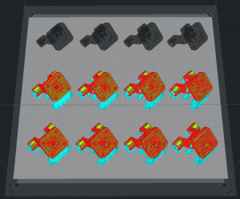
Good to know:
- Always check if the order is correct in the preview.
- You can also use "Per Model Settings" for each model.
- You can group or merge several models to one "part".
You need to disable "Extruder 1" to be able to activate the "Tandem Mode". Than you can activate "Enable Tandem Mode" which is a "Special Modes" setting. Important: The build plate will only be refreshed when a model is imported.
Custom Profiles
A custom profile saves changes to the current default settings. A star next to the name of the profile indicates changed settings. You can save these changes into your own profile. Also the current layer height, from the current profile will be saved in this new profile, but can also be changed afterwards.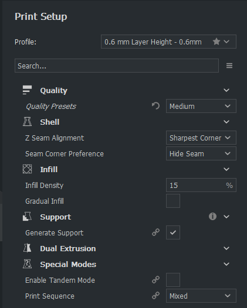 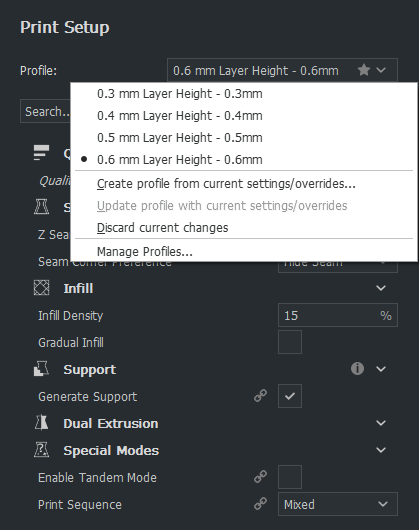
After the profile is saved, you can find it under the default profiles. You can also update your custom profile with additional changed settings.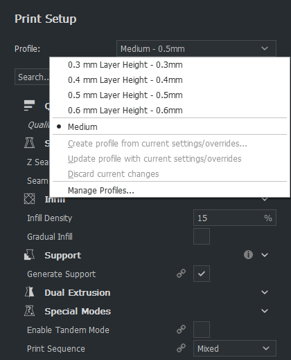
If you go "Manage Profiles" you can also see the changes you made. There are global and specific extruder settings.These profiles are only available in your added machine and thus for all extruders and materials.
Profiles can also be exported and imported.
Custom Materials
If you want to add your own none BigRep material, you can do so by going to the manage material page (Material → Manage Materials...)This window shows the generic materials on which the BigRep materials are based on. You can duplicate one of these files or create a new one. It is recommended to duplicate the material if you have one which is basically the same as one of our materials (a different kind of PLA for example). Please be aware that when you copy a material you also copy all settings. Some materials are not compatible to all extruders, this can not be changed!
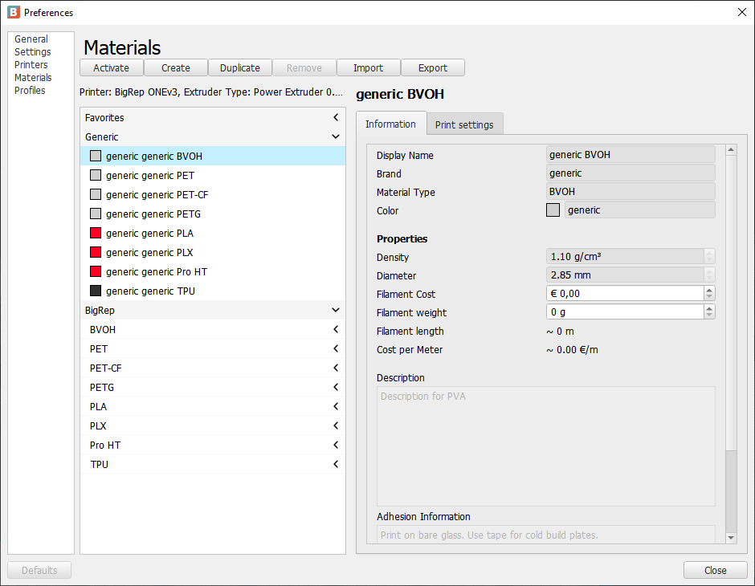
When you have created your own material you can change some settings, like the displayed name or brand, but also color, density (which is used for calculating the used material) and filament diameter (which is mostly 2.85 mm and used for calculating the right amount of extruded material).
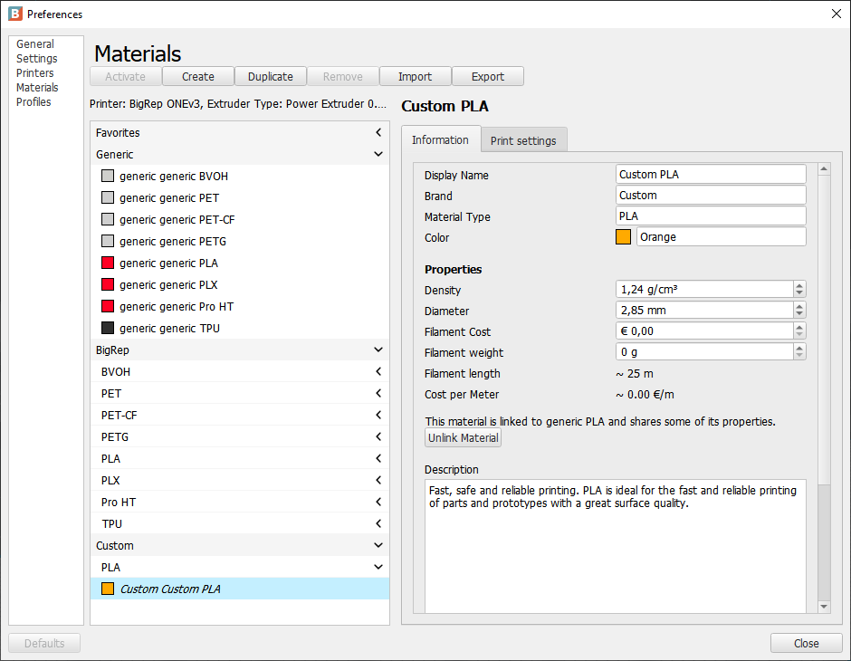
The current displayed print settings are the ones for the currently selected extruder and can be changed for each extruder separately (you have to close the window, change the extruder and than going back again, same for printers). Only a few material related settings can be changed here. If you want to change more settings you have to create a custom profile (see above).
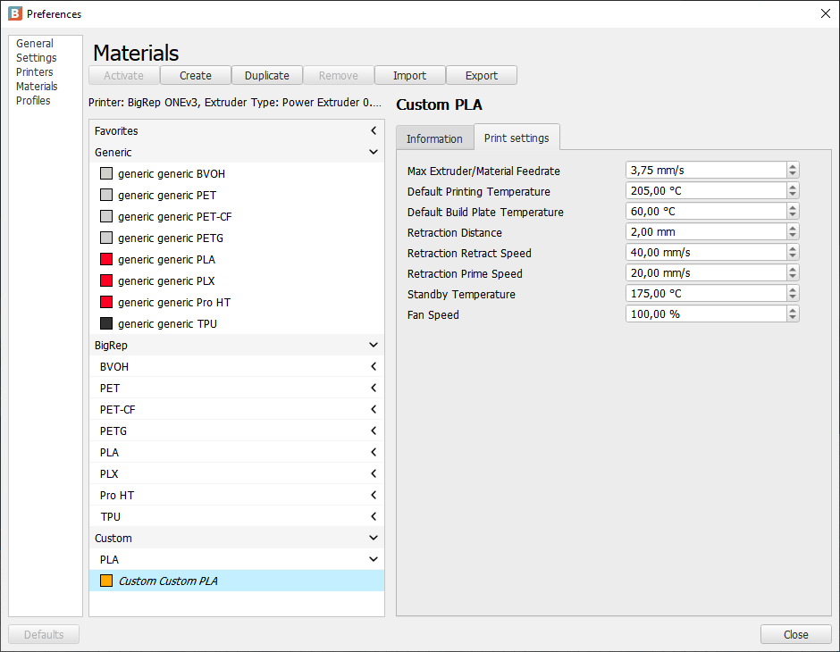
Please take a look on other materials for recommendations about settings.One important setting, different from the Ultimaker Cura setup, is the "Max Extruder/Material Feedrate". This setting is used for calculating the maximum possible printing speed for a certain layer height in combination with the line width. This value states at which speed the extruder can move filament (not the Y/X movment) before it starts to underextrude. You can get this value for your material by extruding the material at different speeds and see when you reach about 95% of the actual length you wanted to extrude. (Be aware that F values in gcodes are in mm/min, while this value is in mm/s). Depending on the material, the real value for printing might be lower than the value you got from the flow tests.
What it does
Support Blockers prevent support within their volume.
Why it should be used
Usually, support is placed on all surfaces with an angle higher than the support angle (overhang).
Sometimes this is not necessary and should be blocked, for example:
- Usually, small horizontal holes don't need support and it can be hard to remove support there.
- Small surfaces that could be printed with bridging.
- Inside a model, where it can't be removed.
How to use Support Blocker
Firstly, it is necessary to load/import a model. When the model is active in the toolbar on the left the following icon can be selected.


Good to know:
- Red surfaces on the model indicate an area where support will be placed.
- The Support Blockers can only be placed on a surface of the model.
- Each cube can be transformed/moved/scale as a normal model.
- To Block the support the red surface must be within the cube/Support Blocker.
- Support Blocker and Custom Support can be placed in the same model.
Custom Support
What it does
Custom Support places support where it would not be placed by default.
Why it should be used
Usually, all surfaces which have a lower angle than the support angle will have no support.
Sometimes it's necessary to place more support, for example:
- Ensure that small area support are sufficiently strong, especially if the piece is tall.
- Stabilize a model to make sure it doesn't fall over.
How to use Custom Support
Firstly, it is necessary to load/import a model. When the model is active, the user can select in the toolbar on the left the following icon:


Good to know:
- Red surfaces on the model indicate areas where support will be placed.
- Custom Support can only be placed on the surface of the model.
- Each cube can be transformed and moved like a normal model.
- The support will be generated everywhere below up to the inside (upper surface) of the cube/Custom Support.
- Support will be always placed even when the support is deactivated.
- Support Blocker and Custom Support can be placed in the same model.